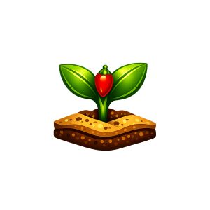
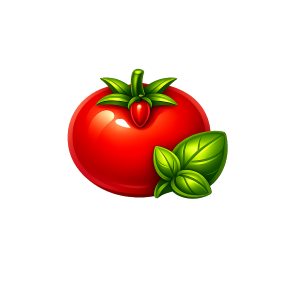
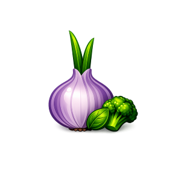
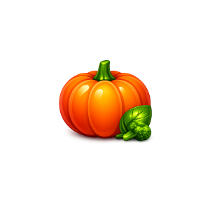
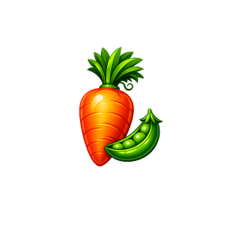

Your Month-by-Month Guide to Planting at the Right Time
January

Start seeds indoors for the slow-growing peppers and chillies.
- Peppers
- Chillies
- Aubergines
February

Continue indoor seed starting for tomatoes and herbs.
- Tomatoes
- Basil
- Thyme
March

March is ideal indoor seed starting month for onions and broccoli.
- Onions
- Broccoli
- Cauliflower
April

Weather might feel like spring, but be patient and wait for the last frost before planting outdoors. Continue your indoor seed starting:
- Pumpkins
- Cabbage
- Cucumbers
May

Time to start seeding the first outdoor vegetables, and planting your first outdoor crops once the ground is warm.
- Carrots
- Peas
- Radishes
June

Continue planting outside your seedlings. In June the weather is warm enough for most plants to be planted outdoors.
- Beans
- Squash
- Salads
Ready to Plan Your Garden?
If you have any questions or need assistance, feel free to ask!
Contact Us